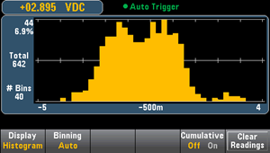
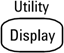
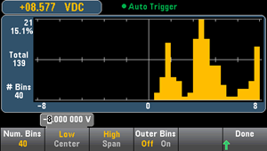
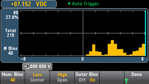
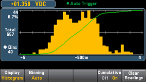
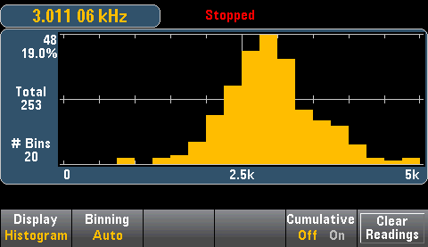
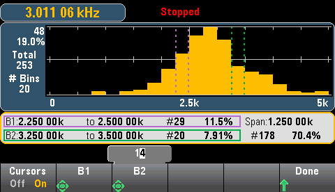
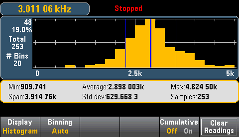

Autoranging can adversely affect the histogram display when measuring repetitive signals spanning multiple ranges. To avoid this, select a fixed range when using the histogram display.
Autoranging can adversely affect the histogram display when measuring repetitive signals spanning multiple ranges. To avoid this, select a fixed range when using the histogram display.The histogram shows measurement data as a graphical representation of the distribution of measurement data. Data is grouped in bins represented by vertical bars in the histogram display.

Autoranging can adversely affect the histogram display when measuring repetitive signals spanning multiple ranges. To avoid this, select a fixed range when using the histogram display.
Pressing the

key, followed by the Display softkey allows you to select the display type:

The Binning softkey allows you to either let the instrument control how the histogram is binned (automatic binning), or to manually specify the binning parameters with the Bin Settings softkey. Changing any binning parameter, or switching between automatic and manual binning, will automatically start the histogram over with new data. On the 34461A/65A/70A, this also resets the trend chart.
For Binning Auto, the algorithm starts by continuously readjusting the histogram span based on the readings coming in, completely re-binning the data whenever a new value comes in outside of the current span. After acquiring a large number of readings, a new reading outside of the range causes the bins to be compressed by a factor of two such that the new bin range will cover the new reading. The number of bins shown is a function of the number of readings received: 0 to 100 readings = 10 bins, 101 to 500 readings = 20 bins, 501 to 1000 readings = 40 bins, 1001 to 5000 readings = 100 bins, 5001 to 10000 readings = 200 bins, >10000 readings = 400 bins. If the NPLC setting is < 1 PLC, or Aperture Time (34465A/70A only) is < 20 mS, the maximum number of bins is 100.
For Binning Manual, you can set number of bins to 10, 20, 40, 100, 200, or 400. You can specify the bin range as either Low and High values, or as a Span around a Center value. For example, the histogram range shown above (from -5 to 4 V) could be specified as a Low of -5 V and a High of 4 V, or a Center of -0.5 V and a Span of 9 V.
The Outer Bins softkey displays two additional bins, for readings above and below the bin range. For example, this image shows the Outer Bins softkey set to Off.

The image below adds the outer bins to the display. The relatively large number of readings above the bin range (the cyan bar) causes the bars within the bin range to shrink.

The main histogram menu includes a Cumulative softkey that hides or shows a line representing the cumulative distribution of the histogram data. Note that this line represents all of the data only when the outer bins are shown; if the outer bins are not shown, the outer bin data is not represented in the line. The cumulative distribution line always goes from 0 to 100% on the vertical scale, regardless of the histogram’s scale.

The final button on the histogram menu, Clear Readings, clears reading memory and starts a new histogram.
The graphic below shows a histogram of frequency measurements. Data is displayed on the left side of the histogram. In the graphic below, reading from top left downward:

Press the Cursors softkey (34465A/70A only) to display the histogram cursors.
Cursors in the histogram are specified as bin numbers and display the range of values covered by those bins, the count and the percentage of the total. The total count and percentage of total, as well as the measurement range covered, between the cursor bins, is also displayed. In the graphic below, cursor B1 (violet vertical lines) is positioned on bin number 10 and cursor B2 (green vertical lines) is positioned on bin number 14 (bin number shown above the B1 softkey). The bin information for cursor B1 is shown in the violet box, the bin information for B2 in the green box. For example, the information in the B1 box is in the graphic below is:
The data between the B1 and B2 cursors, including the data in the B1 and B2 bins, is shown to the right of the violet and green boxes. In the graphic below:

When Outer Bins are shown (when using manual binning) a zero cursor value indicates the outlier count below the histogram range, and one plus the number of bins indicates the outlier count above the histogram range.
Showing statistics (Shift > Math > Statistics) is particularly useful for the histogram display. For example, in the graphic below, the thick blue line is the average, each thin blue line represents one standard deviation from the average.
